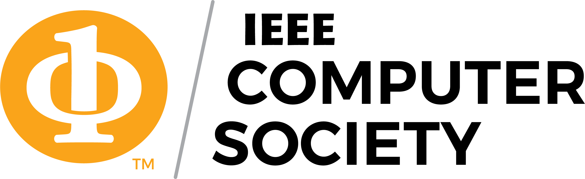
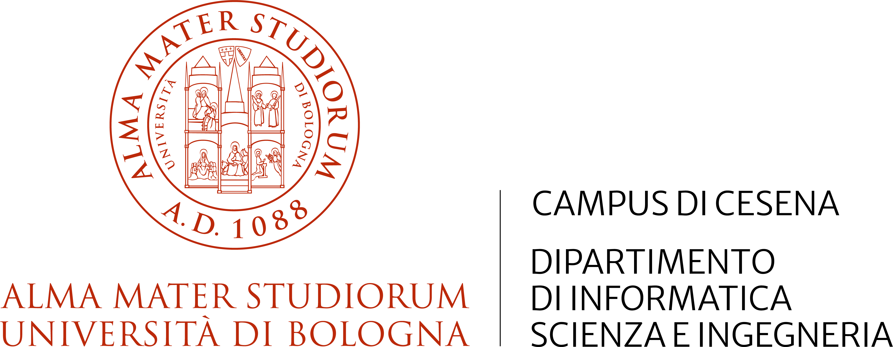
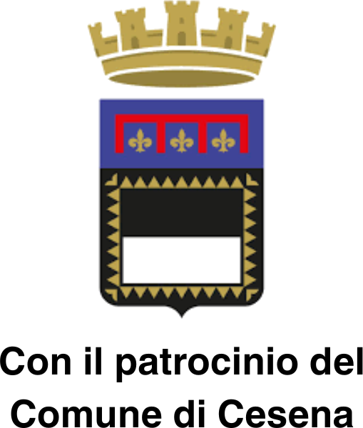
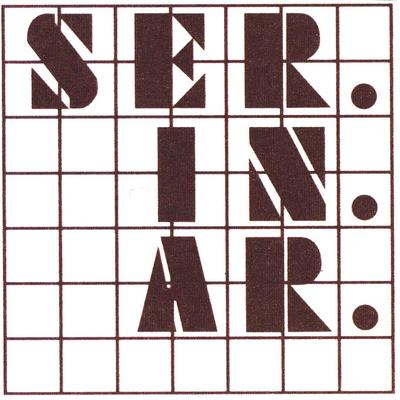
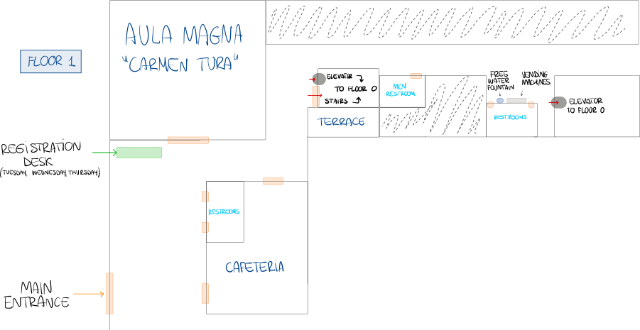
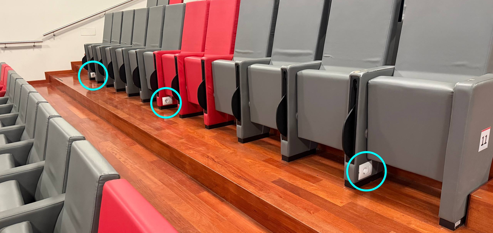
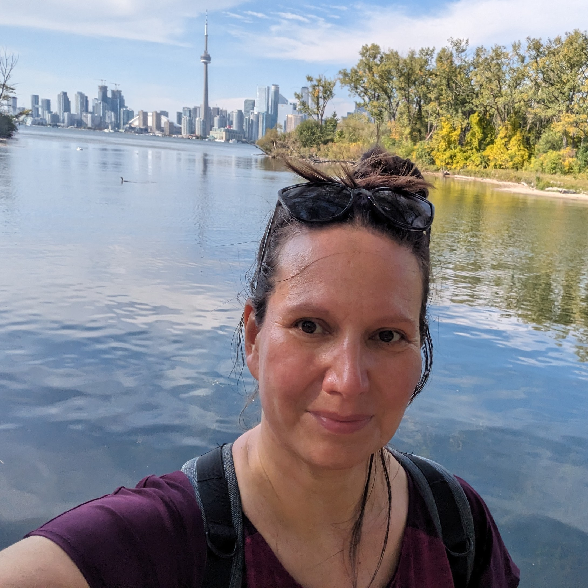
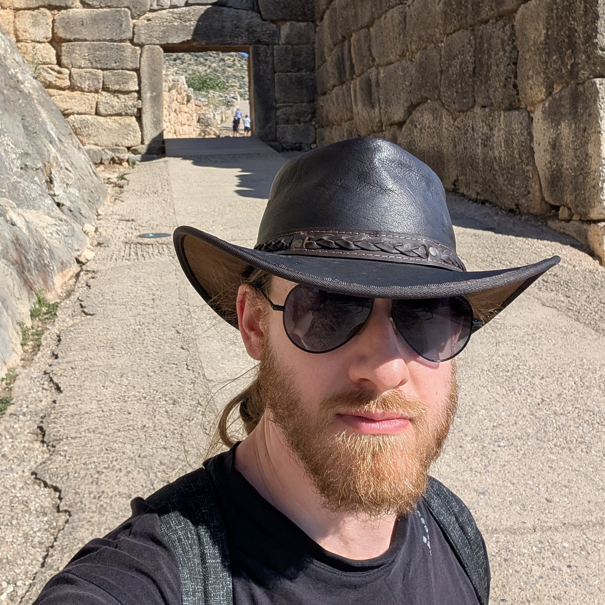
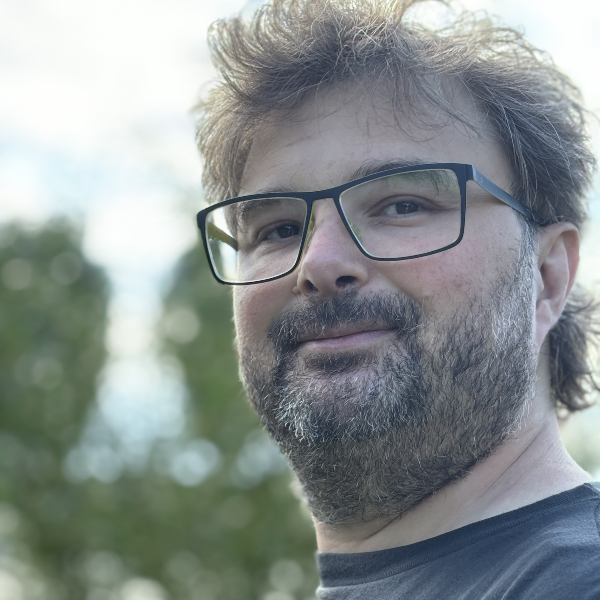
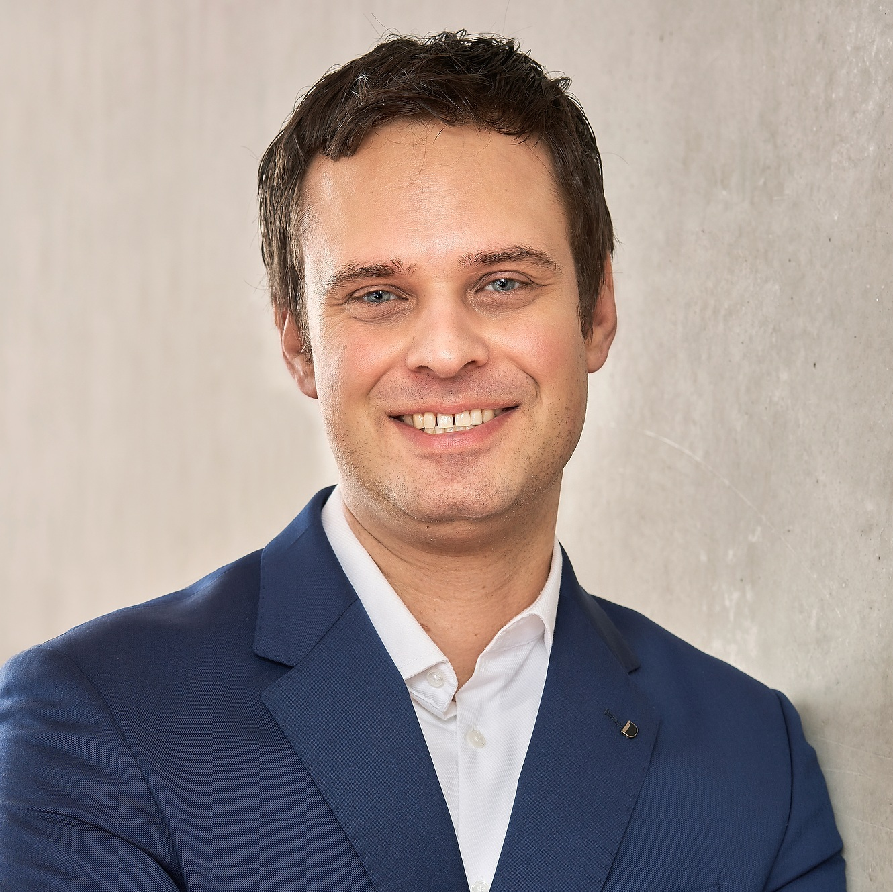

Welcome to Cesena
Two streams. One community.
Self-Organizing Systems




ACSOS in Cesena
- A University of Bologna campus in Romagna
- Hosts roughly one-third of the Department of Computer Science and Engineering
- Several ACSOS/SASO contributors are based here
- Modern infrastructure
- Cesena hosted a hybrid IEEE ACSOS special event in 2022
- three speakers
- rich social program


Moving in the Campus, floor 1

Moving in the Campus, floor 0

Finding electricity plugs

- Plugs are located every five seats or so, look at the bottom-right of your seat
- Plugs are Italian “Bipasso”, also compatible with German plugs
Malatestiana Library Visit

Wednesday, 18:00 (turn 1) and 19:00 (turn 2)
- Malatestiana Library visits are limited!
- We secured 50 places, allocated to the first 50 people who registered and expressed interest
- If you are among the lucky ones, you’ll find a ticket in your badge
- The first 25 registrants have been allocated to turn 1, the other 25 to turn 2
- Tickets are not nominal:
- You can swap tickets with someone else
- You can give away your ticket
- If you change your mind and no longer wish to visit the Malatestiana, please consider giving away your ticket!
Conference dinner and award ceremony
Wednesday, 19:00 to 02:00


- Teatro Verdi, Cesena
- In the city centre, a 30-minute walk from campus
- Aperitivo starts at 19:00
- The three-course dinner will be served afterwards
- Around 20:20
- we will allow enough time for those visiting the Malatestiana Library to join
- After dinner, the stage will become a dance floor
- Open bar available
Reaching Teatro Verdi
Additional Social events

- Today: Wine, Views, and Dinner on Romagna’s Balcony
- Wine tasting and dinner in Bertinoro
- A bus will pick up participants directly from campus at the end of the last session
- Thursday: ACSOS GP on the Riviera: Racing & Dinner
- Kart racing in Riccione
- Non-racing Riccione walk option
- Dinner in Rimini at Bounty
- Friday: Along Leonardo’s Canal: Cesenatico and Fish Dinner
- Visit to the maritime museum
- Visit to Leonardo’s Canal and Cesenatico’s city centre
- Fish dinner near the beach
- Meat and veggy options avail.
serinarpayments.it/acsos-2026/
ACSOS 2026 Social Coordination on Telegram
Pics, or didn’t happen
Program at a glance
| Monday7 September | Tuesday8 September | Wednesday9 September | Thursday10 September | Friday11 September | |
|---|---|---|---|---|---|
| 09:00–09:30 | Registration | OpeningAula Magna | KeynoteMarco DorigoAula Magna | KeynoteIvona BrandicAula Magna | WorkshopsAICR-ACS · SISSYAICR-ACS: 2.3 · SISSY: 2.4 |
| 09:30–10:00 | WorkshopsSaSSO4 · AI4ASSaSSO4: 2.10 · AI4AS: 2.4 | KeynoteValeria CardelliniAula Magna | |||
| 10:00–10:30 | Main-track sessionAula Magna | Main-track sessionAula Magna | Main-track sessionAula Magna | ||
| 10:30–11:00 | |||||
| 11:00–11:30 | Coffee break2.13 | Coffee break2.13 | Coffee break2.13 | Coffee break2.13 | Coffee break2.13 |
| 11:30–12:00 | WorkshopsSaSSO4 · AI4ASSaSSO4: 2.10 · AI4AS: 2.4 | Main-track sessionAula Magna | Main-track sessionAula Magna | Main-track sessionAula Magna | WorkshopsAICR-ACS · SISSYAICR-ACS: 2.3 · SISSY: 2.4 |
| 12:00–12:30 | |||||
| 12:30–13:00 | |||||
| 13:00–13:30 | LunchSala Polivalente | LunchSala Polivalente | Lunch & PostersLunch: Sala Polivalente · Posters: 2.3 | Lunch & PostersLunch: Sala Polivalente · Posters: 2.3 | LunchSala Polivalente |
| 13:30–14:00 | |||||
| 14:00–14:30 | Tutorials 1 & 2SaSSO4 also runningT1: 2.3 · T2: 2.4 · SaSSO4: 2.10 | KeynoteCarlo GhezziAula Magna | Main-track sessionAula Magna | Main-track sessionAula Magna | WorkshopsAICR-ACS · SISSYAICR-ACS: 2.3 · SISSY: 2.4 |
| 14:30–15:00 | |||||
| 15:00–15:30 | PhD flash talksAula Magna | ||||
| 15:30–16:00 | Coffee break2.13 | Poster flash talksAula Magna | Coffee break2.13 | ||
| 16:00–16:30 | Tutorials 3 & 4SaSSO4 also runningT3: 2.3 · T4: 2.4 · SaSSO4: 2.10 | Coffee break & PostersCoffee: 2.13 · Posters: 2.3 | Coffee break & PostersCoffee: 2.13 · Posters: 2.3 | Coffee break & PostersCoffee: 2.13 · Posters: 2.3 | WorkshopsAICR-ACS · SISSYAICR-ACS: 2.3 · SISSY: 2.4 |
| 16:30–17:00 | Main-track sessionAula Magna | ACSOS in Practice / Doctoral Symposium breakoutsIn Practice: Aula Magna · DS: 2.3 / 2.4 | Expert Panel / Doctoral Symposium breakoutsPanel: Aula Magna · DS: 2.3 / 2.4 | ||
| 17:00–17:30 | |||||
| 17:30–18:00 | — | Malatestiana library visitBiblioteca Malatestiana | ClosingAula Magna | ||
| Evening | Welcome ReceptionRocca Malatestiana | Additional SE: Wine Tasting & Dinner in BertinoroBertinoro · off-site | Banquet at Teatro VerdiTeatro Verdi | Additional SE: Kart Race in Riccione & Dinner in RiminiRiccione / Rimini · off-site | Additional SE: Visit to Cesenatico & Fish Dinner on the beachCesenatico · off-site |
Keynote speakers
main track keynote

Valeria Cardellini
Adaptive Serverless Computing Across the Cloud-Edge Continuum
main track keynote

Marco Dorigo
Bridging Centralized and Decentralized Control in Robot Swarms through Self-Organizing Hierarchies
main track keynote

Ivona Brandic
Bridging Classical and Quantum Computing: Lessons, Challenges, and Opportunities
doctoral symposium keynote

Carlo Ghezzi
Being a researcher — in turbulent times
Thank you, Organizing committee!
Aishwaryaprajna
Workshop Co-Chair
Elsy Kaddoum
Workshop Co-Chair
Mirko D'Angelo
Registration Chair
Ilias Gerostathopoulos
Tutorial Chair
Gabriele Russo Russo
Tutorial Chair
Roberto Casadei
Finance Chair
David King
Sponsorship Chair
Sven Tomforde
Sponsorship Chair
Kirstie Bellman
Community Building
Elia Henrichs
Community Building
Jenna Kline
Community Building
Lukas Esterle
PhD Symposium Chair
Fatemeh Golpayegani
PhD Symposium Chair
Jialong Li
Proceedings Chair
Antonio Bucchiarone
Publicity Co-Chair
Angela Cortecchia
Publicity Chair
Davide Domini
Social Experience Chair
Nathan Lloyd
Publicity Chair
Markus Stumptner
Publicity Co-Chair
Gianluca Aguzzi
Web Chair and AI Chair
Juan C. Rosero
Web Chair
Alessandro V. Papadopoulos
In Practice Chair
Ana Petrovska
In Practice Chair
Nicolás Cardozo
Artifact Evaluation
Evangelos Pournaras
Artifact Evaluation
Simon Dobson
Expert Panel Chair
Mirgita Frasheri
Expert Panel Chair
Martina Baiardi
Student Volunteers
Sona Ghahremani
Student Volunteers
Ghassan Al-Falouji
Demo & Poster Chair
Nasim Beigi-Mohammadi
Demo & Poster Co-Chair
Marco Edoardo Santimaria
AI Chair
Thank you, volunteers!

(placeholder for their picture)
General and PC Chairs

Ivana Dusparic
Trinity College Dublin, Ireland

Danilo Pianini
University of Bologna, Italy

Robert René Maria Birke
University of Turin, Italy

Christian Krupizer
University of Hohenheim, Germany
Robert René Maria Birke, 1980-2026
Robert passed away on August 18, few days before the conference.
Robert was a beloved member of our community and a dedicated researcher. His passing is a great loss to all of us.
Today at 13:30, those willing to remember him are invited to join us in Aula Magna (where we are now).
ACSOS 2026: Numbers
Conference
- 4 workshops
- 4 tutorials
- 3 keynotes
- 1 PhD symposium keynote
- 2 posters (+8 from main-track papers)
- 6 artifacts (+6 from main-track papers)
- 109 Registered participants
- including keynote speakers and volunteers
Main track
- 106 Abstract submissions
- 100 Complete submissions
- 20 Desk rejects (non-anonymous, AI-gen)
- 16 Accepted papers (A.R. 16%)
- 7 Conditional accepts, 100% success rate
- 23 Full papers in total (A.R. 23%)
- 10 Short papers
- 5 Vision papers
- 38 Main-track presentations
Authors per submission
What we work on
Submitting authors by country, map
Submitting authors by continent
Submitting authors by country
Estimated accepted authors by country
Estimated accepted authors by continent
Estimated accepted authors by country
Proceedings

Adaptive Serverless Computing Across the Cloud-Edge Continuum
University of Rome Tor Vergata, Italy
Serverless computing, particularly Function-as-a-Service, has transformed application deployment through event-driven execution and automatic scaling. Across the heterogeneous Cloud-Edge continuum, however, cloud-centric platforms struggle with changing node availability, network conditions, data locality, and energy constraints.
This keynote explores adaptive serverless computing, where scheduling, execution offloading, and resource management continuously respond to infrastructure, workload, and user requirements. Context-aware orchestration makes decentralized runtime decisions that balance performance, cost, and sustainability.
Using Serverledge, a decentralized open-source FaaS platform for distributed continuum environments, the talk shows how adaptive execution can provide efficient, resilient, and low-latency serverless performance without centralized control. It closes with challenges and a vision for autonomous serverless platforms.